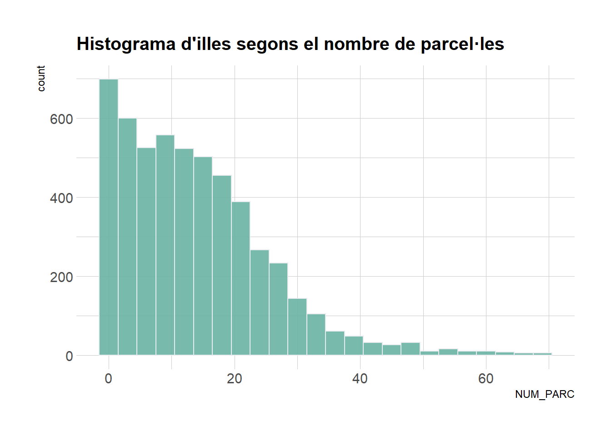

Javier Cisneros Serra, Carles Westendorf Vidal i Biel Morales Cardona
Anàlisi de Dades. Curs 2024/2025
Introducció
Aquesta pràctica forma part de l’assignatura d’Anàlisi de Dades i consisteix en descarregar un database de la pàgina de dades oficial del \(\href{https://datos.gob.es/}{Govern d'Espanya}\) i fer un petit anàlisi estadístic de les dades trobader per a respondre alguna pregunta adient.
El nostre grup en concret, hem decidit treballar amb un database sobre les dades urbanístiques de les illes (“manzanas”) de la ciutat de Barcelona. Aquestes dades contenen moltes variables numèriques d’entre les quals ens interessen, per exemple, el nom del barri i districte on es troben,
data =read.csv('TAULA_MAP_ILLA.csv', fileEncoding ="UTF-8")data =subset(data, select =c(5,6,8,9,10,11,12,13,14,15))data$NOM_DISTRICTE =as.factor(data$NOM_DISTRICTE)data$NOM_BARRI =as.factor(data$NOM_BARRI)head(data)
NOM_DISTRICTE NOM_BARRI NUM_PARC NUM_LOCALS
1 Ciutat Vella el Raval 4 96
2 Ciutat Vella la Barceloneta 1 0
3 Ciutat Vella la Barceloneta 1 0
4 Ciutat Vella la Barceloneta 3 3
5 Ciutat Vella la Barceloneta 4 698
6 Ciutat Vella Sant Pere, Santa Caterina i la Ribera 2 0
NUM_VIVENDES NUM_PARKINGS NUM_ALTRES SUP_CONS SUP_SOBRE_RASANT
1 1 3 89 202635 94173
2 0 0 0 0 0
3 0 0 0 0 0
4 0 0 3 3711 0
5 60 563 75 94304 54222
6 0 0 0 0 0
SUP_SOTA_RASANT
1 108462
2 0
3 0
4 3711
5 40082
6 0
Presentació de dades
La primera variable que trobam és NOM_DISTRICTE, aquesta l’hem convertida en tipus factor i consta de 10 nivells; representant els 10 diferents Districtes que es troben a Barcelona.
A continuació, des del dataset, hem seleccionat la variable NUM_PARC, la qual guarda (en nombres enters) el número de parcel·les de cada illa. Mostrem la moda d’aquesta (amb el paquet modeest):
library(modeest)mfv(data$NUM_PARC)
[1] 1
La variable NUM_PARC resulta concentrar-se en l’1, en el següent histograma (obtingut de R gallery) veim aquest fenòmen: (hem acotat la representació deixant de banda els “outliers”)
── Attaching core tidyverse packages ──────────────────────── tidyverse 2.0.0 ──
✔ dplyr 1.1.4 ✔ readr 2.1.5
✔ forcats 1.0.0 ✔ stringr 1.5.1
✔ ggplot2 3.5.1 ✔ tibble 3.2.1
✔ lubridate 1.9.3 ✔ tidyr 1.3.1
✔ purrr 1.0.2
── Conflicts ────────────────────────────────────────── tidyverse_conflicts() ──
✖ dplyr::filter() masks stats::filter()
✖ dplyr::lag() masks stats::lag()
ℹ Use the conflicted package (<http://conflicted.r-lib.org/>) to force all conflicts to become errors
p
Warning in grid.Call(C_stringMetric, as.graphicsAnnot(x$label)): font family
not found in Windows font database
Warning in grid.Call(C_stringMetric, as.graphicsAnnot(x$label)): font family
not found in Windows font database
Warning in grid.Call(C_stringMetric, as.graphicsAnnot(x$label)): font family
not found in Windows font database
Warning in grid.Call(C_textBounds, as.graphicsAnnot(x$label), x$x, x$y, : font
family not found in Windows font database
Warning in grid.Call(C_textBounds, as.graphicsAnnot(x$label), x$x, x$y, : font
family not found in Windows font database
Warning in grid.Call(C_textBounds, as.graphicsAnnot(x$label), x$x, x$y, : font
family not found in Windows font database
Warning in grid.Call.graphics(C_text, as.graphicsAnnot(x$label), x$x, x$y, :
font family not found in Windows font database
Warning in grid.Call.graphics(C_text, as.graphicsAnnot(x$label), x$x, x$y, :
font family not found in Windows font database
Warning in grid.Call.graphics(C_text, as.graphicsAnnot(x$label), x$x, x$y, :
font family not found in Windows font database
Warning in grid.Call.graphics(C_text, as.graphicsAnnot(x$label), x$x, x$y, :
font family not found in Windows font database

NUM_LOCALS és una variable que ens dona un recompte numèric dels locals que trobam a cada illa. La mitjana que pren aquesta variable és:
mean(data$NUM_LOCALS)
[1] 274.8909
Les variables NUM_VIVENDES, NUM_PARKINGS i NUM_ALTRES també són de tipus enter i són els distints tipus de locals que hi podem trobar per illa. Treurem els quantils centrals per a fer-nos una idea de les dades.